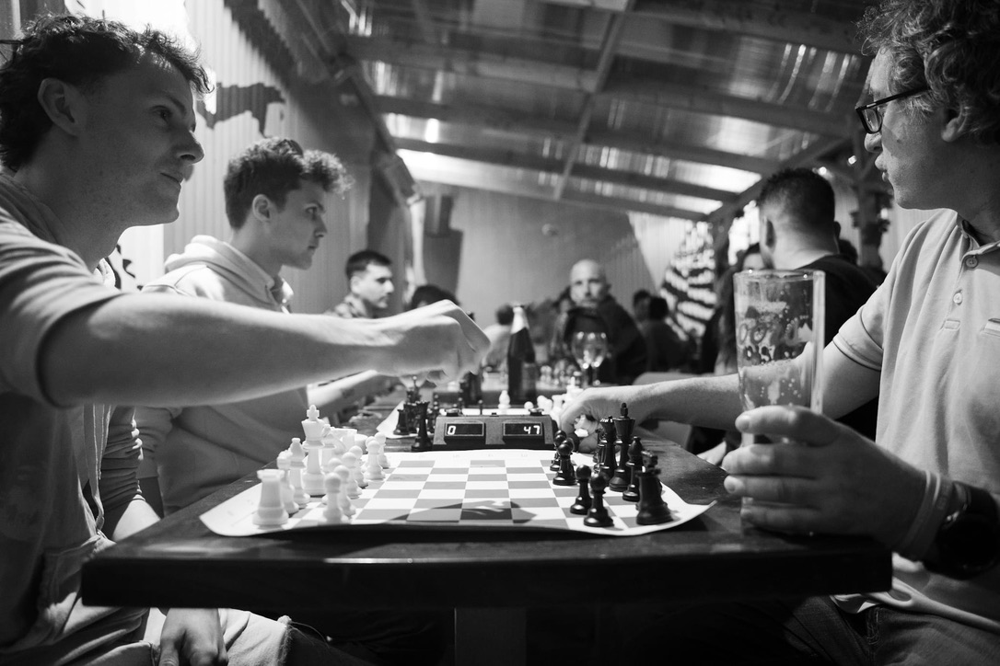

Mr. Bradleys May Tournament
Photography: Mark Healy
May 2022
The air was thick with anticipation as chess enthusiasts from across Cork gathered at Mr. Bradley's Bar for a thrilling tournament hosted by the Big Mahs Chess Club. The venue was abuzz with excitement as 16 players, each armed with their strategic prowess, took their seats at the chessboards, ready to battle it out for the ultimate glory.
From the very beginning, it was evident that this tournament would be one for the books. Participants displayed their dedication and passion for the game, making every move with calculated precision. As the rounds progressed, the tension in the room escalated, and the stakes grew higher with each victory.
Among the contenders, one player shone brighter than the rest - Len Hackett. With unwavering determination and a masterful display of tactics, Len sailed through the rounds, leaving a trail of defeated opponents in his wake. Round after round, he showcased remarkable strategic acumen, earning him a perfect score of 5/5.
In the final round, Len faced a formidable challenger in Eimhin Ward. Eimhin, too, had displayed remarkable skill throughout the tournament, and the showdown promised to be nothing short of epic. The match began with an intense exchange of moves, each player vying for control of the board.
 As the tension reached its peak, Len's experience and strategic finesse proved decisive, securing him a magnificent victory over Eimhin in the final round. It was a hard-fought contest, and both players displayed immense sportsmanship and respect for each other's abilities.
As the tension reached its peak, Len's experience and strategic finesse proved decisive, securing him a magnificent victory over Eimhin in the final round. It was a hard-fought contest, and both players displayed immense sportsmanship and respect for each other's abilities.
Cian O Mahony emerged as another standout performer in the tournament, consistently delivering impressive victories. His strong gameplay earned him a well-deserved second-place finish, just behind the tournament champion, Len Hackett.
Eimhin Ward, despite his defeat in the final round, displayed exceptional talent and resilience throughout the tournament, ultimately securing the third-place position. The competition was fierce, and Eimhin's performance was nothing short of commendable.
Beyond the podium finishers, every participant contributed to the tournament's vibrant atmosphere, making it a celebration of chess and camaraderie. The event was a testament to the passion and love for the game that binds the members of the Big Mahs Chess Club.
As the final match concluded, and the winners were celebrated, the true spirit of sportsmanship and the joy of chess permeated the room. Regardless of the outcome, everyone left the tournament with new insights, valuable experiences, and a sense of belonging to a tight-knit community of chess enthusiasts.
The Big Mahs Chess Club tournament at Mr. Bradley's Bar was a resounding success, leaving everyone eagerly anticipating the next event. The passion for chess and the bond among the participants were evident, making this gathering a truly memorable experience for all.
Congratulations to Len Hackett for his remarkable victory, as well as Cian O Mahony and Eimhin Ward for their outstanding performances. The tournament was a testament to the dedication and talent that thrives within the Big Mahs Chess Club, and we look forward to witnessing many more epic battles in the future.